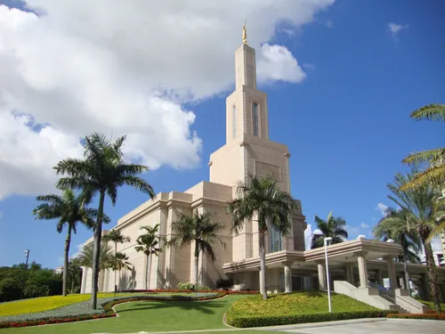
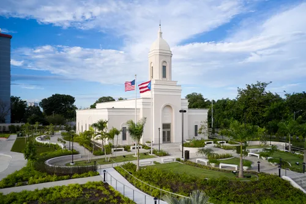
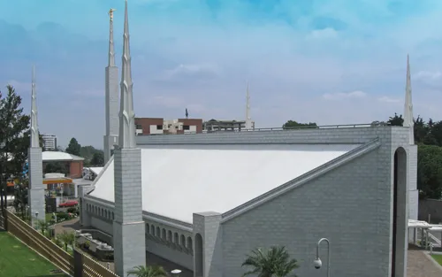
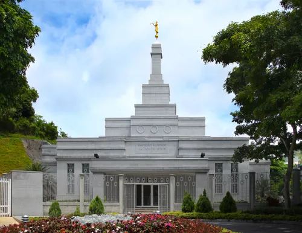

Santo Domingo, Dominican Republic Temple. 
San Juan, Puerto Rico Temple Pourt Prince, Haiti Temple 
Guatemala City, Guatemala Temple Lima, Peru Temple Salt Lake City, United States Temple Madrid, Spain Temple
Caracas, Venezuela Temple Sao Paulo, Brazil Temple